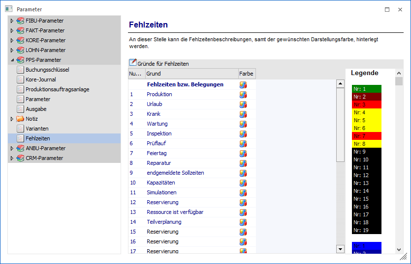

Über den Bereich "PPS-Parameter - Fehlzeiten" können die allgemeinen Einstellungen für die Fehlzeiten der WinLine PPS vorgenommen werden.
Hinweis
Standardmäßig wird das Fenster in einem "Lesemodus" geöffnet, d.h. es können die bestehenden Einstellungen kontrolliert, Änderungen allerdings nicht durchgeführt werden. Hierfür muss zunächst mit Hilfe des Buttons "Bearbeiten" der "Bearbeitungsmodus" aktiviert werden. Alternativ kann diese Aktivierung auch über das Kontextmenü der rechten Maustaste (Funktion "Applikation xxx bearbeiten") erfolgen.

Ø Nummer
Dieses ist ein reines Informationsfeld, welche die interne Nummer der Reservierung / Fehlzeit zeigt.
Ø Grund
Am dieser Stelle wird der Text der Fehlzeit dargestellt. Die Fehlzeitengründe 1 bis 11 sind vom Programm fix vorgegeben, die Gründe 12 - 19 stehen für die Bearbeitung frei zur Verfügung.
Des Weiteren können die generellen Farben eingestellt werden, z.B. die Farben für die Anzeige der Mehrzeit, der Abweichungen, der Istzeiten usw.
Ø Farbe
Durch einen Doppelklick auf das Symbol in der jeweiligen Zeile, geht das Fenster mit der Farbpalette auf. Hier kann nun definiert werden, in welcher Farbe die jeweilige Fehlzeit in den Übersichten dargestellt werden soll.
Ø Legende
In der Legende ist anhand der Nummer ersichtlich, welche Farbe welcher Fehlzeit zugeordnet wurde.